Product Designer,
UX Researcher
Brown CS Department
2 weeks (2025)
Figma, HTML
CSS, React
Imagine you're a brand-new student rushing to print an assignment minutes before class.
You reach the campus printer only to be met with unclear Wi-Fi steps, confusing card swipes, and zero guidance on how to send your document from phone to printer.
This portfolio piece explores how a seemingly trivial interface, which is used often, can become a major obstacle for first-time users—especially freshmen.
Below is a sketch of the printer interface that users work with every day:

To better understand real-world printer challenges, we sought out Brown University students and asked them questions while they were actively using the printer.
Our primary goal was to capture genuine reactions and frustrations in context, rather than relying on hypothetical scenarios.
Through our on-site observations and interviews with three Brown University students (including freshmen and upperclassmen), several themes emerged:
Many users reported feeling frustrated and anxious, especially under time pressure. Despite an otherwise "straightforward" interface, the learning curve for new users was steep.
The empathy maps below capture the experiences and frustrations of two key user groups: Tania, the tech nervous freshman, and Lucas, the power user.
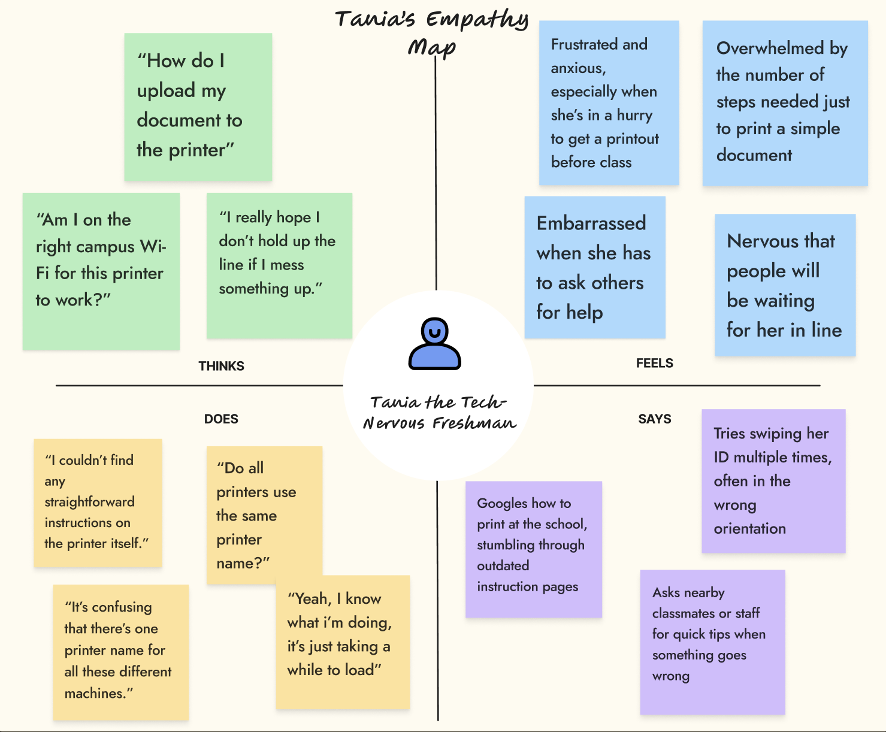
Tania is a first-semester freshman who has never printed on a campus printer before. She's juggling classes, new routines, and campus life, so she rarely has time to learn new technology in advance.
Her biggest hurdle is the confusing, multi-step process to get documents onto the printer (especially from her phone), and she often feels pressured when there are people waiting behind her.
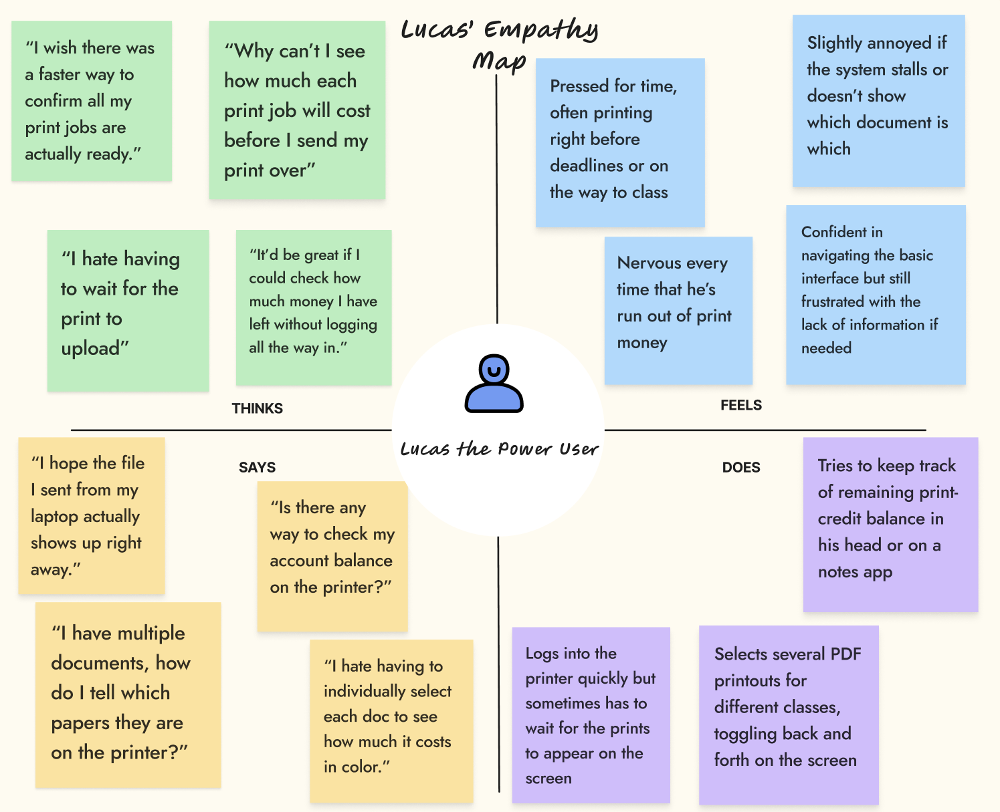
Lucas is a junior who prints frequently for various projects and assignments. He's familiar with logging in and swiping his card, so the basics aren't an issue.
However, he finds it clumsy to manage multiple print jobs in one queue and has encountered unexpected wait times or confusing file names. He prints often and struggles to keep track of how much print money he has left.
This 10-frame storyboard captures Tania's stressful path from arrival at the printer to finally collecting her document. Each frame highlights a key step—and potential frustration—in the process.
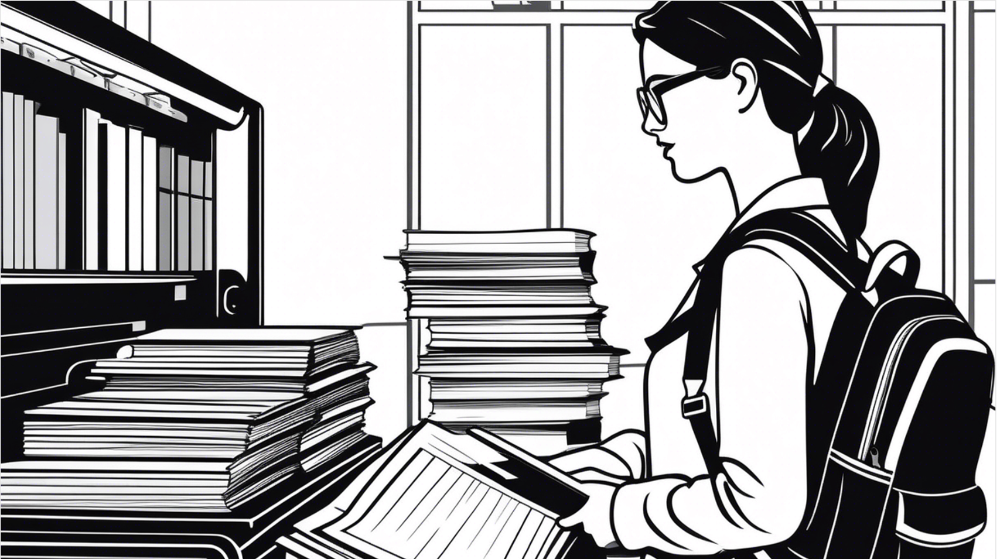
1. Tania has class readings to print out and decides to use the school printer for the first time
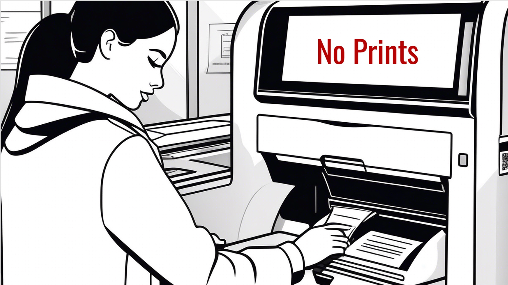
2. Swipes ID to printer, trying to see how to print. But there are no instructions on the printer screen.
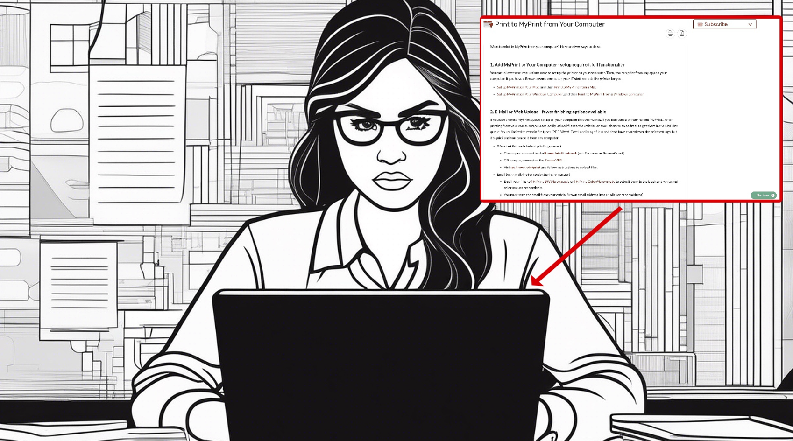
3. Confusion about the online printing instructions
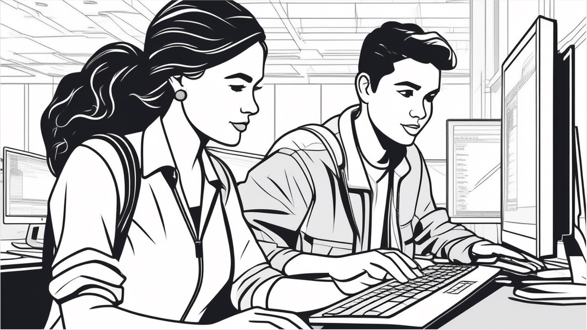
4. Asking upperclassman for help understanding how to print
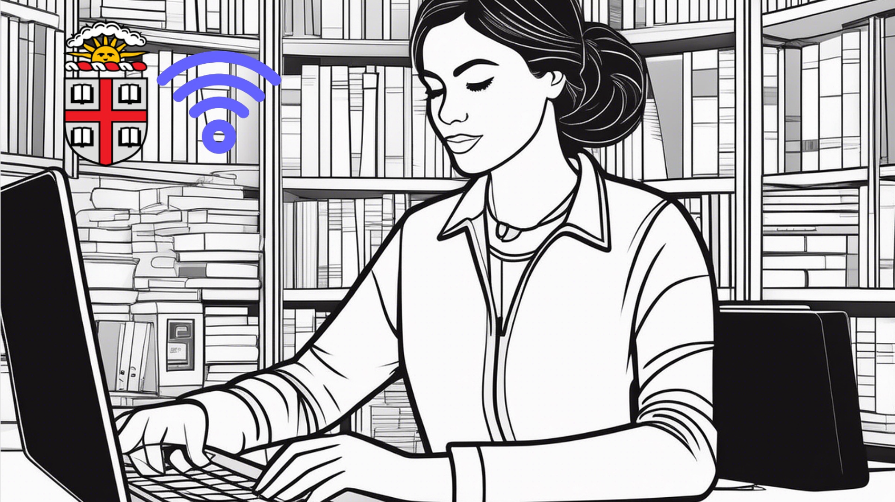
5. Finally logs into the correct Brown network, tries again.
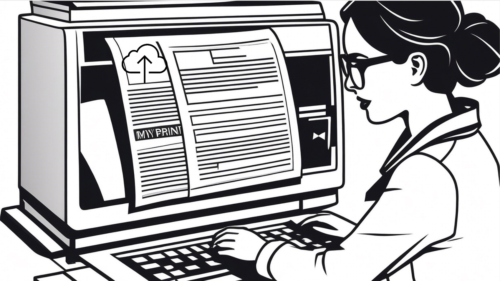
6. Tania finally prints the pdf to myprinter
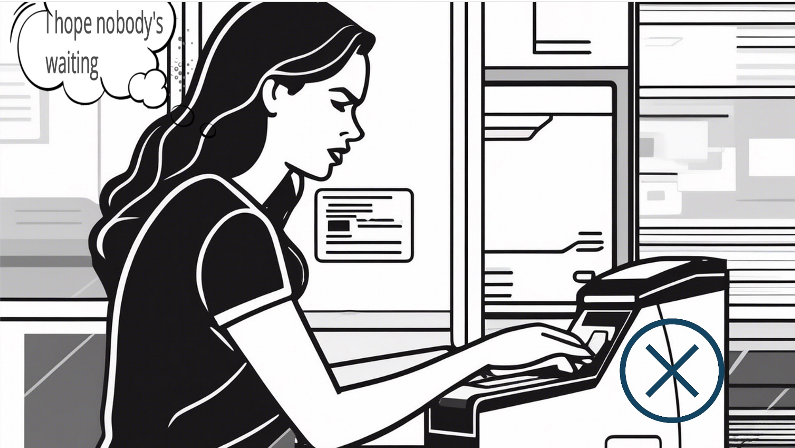
7. Tries swiping her ID multiple times, often in the wrong orientation.
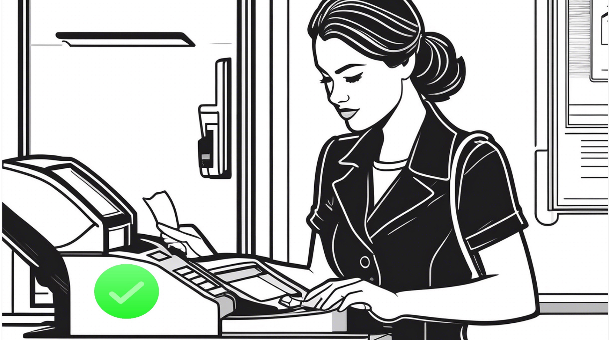
8. Wonders if she has enough print credit left.
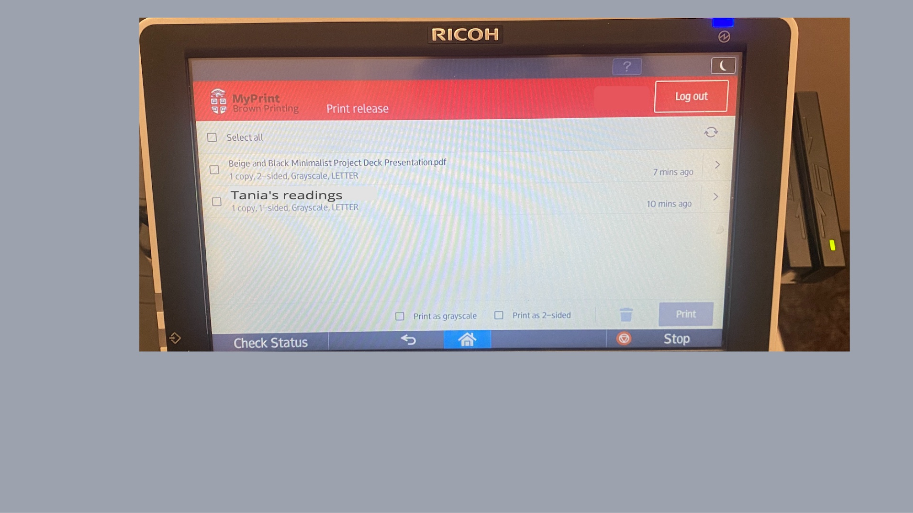
9. Navigating this printer interface to print her readings
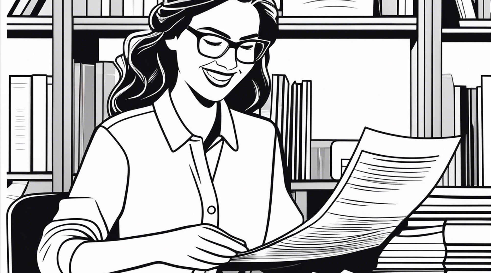
10. Relief! Paper finally prints, just in time for class.
This case study demonstrates how even a seemingly simple interface—like a campus printer—can derail users if core interactions are poorly communicated. By mapping out the steps, frustrations, and emotional touchpoints, we've uncovered clear opportunities for improvement:
Addressing these issues would not only lower user frustration but also turn the Brown campus "printer panic" into a straightforward task.